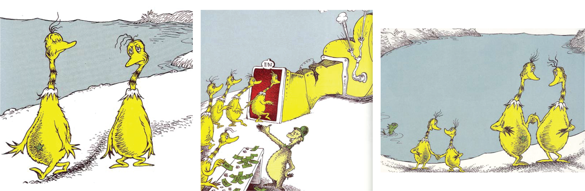
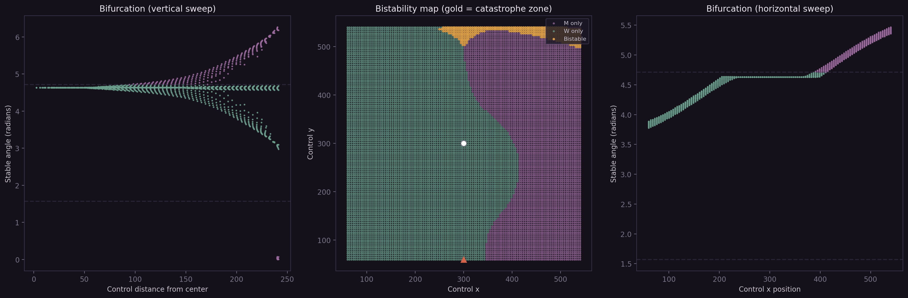

drag the blue point
That was a catastrophe. The disc held its position as long as it could, but the tension in the bands became untenable. It had to jump. No smooth transition — a discontinuous snap from one stable state to another.
The letter on the disc is a judgment: M when pointing right, W when pointing left. Two stable positions, one letter each. Between them — a zone where the disc cannot decide.
The Tape
The machine remembers. Each snap adds a row and column to this matrix. The new entries negate the previous diagonal — if the diagonal was M, the new edge is W, and vice versa. This is exactly the operation from Cantor's 1891 proof, which used two characters — m and w — and showed that flipping the diagonal of any enumeration produces something the enumeration cannot contain. McBean's Star-On, Star-Off machine performs the same operation: read a star, erase it; read a blank belly, add a star. Here the proof becomes a process: the machine reflects on its own history, negates it, and generates something new. The flipping never stops.
The Memory
Bifurcation
Each dot is a snap. Horizontal: how far you pulled. Vertical: where the disc jumped to.
The Sound of Time
Consciousness pulses like sound through air: compression when the disc snaps (judgment, determination, the fist clenching), rarefaction when it settles (release, integration, the fist opening). This is not a physical model — it is the rhythm of meaning-making made visible, the hermeneutic circle unwound into a wave.
The bifurcation plot is accumulating your interactions. Each dot records where you were pulling when the disc snapped, and where it jumped to. Over time, structure may become discernible — a fold in parameter space. Or not. It depends on how you pull.
You can change the physics. Higher spring constant means stiffer bands; the snaps become more violent. Shorter natural length means the bands are taut sooner; the disc is more tightly held.
Clench your fist. Your hand is full of itself. That is the first "no" — a compression. Now release the clench. Your hand does not necessarily open all the way. It stops gripping so hard. That is the second "no" — an expansion. You are still you. But now there is room.
The disc goes through this rhythm with every snap. Tension builds (compression) until the system cannot hold. Then it gives way (expansion) into a new equilibrium. The tape records which equilibrium — but not how it felt to get there. The springs are ideal. They do not remember being stretched.
⋆ ⋆̸ ⋆
What is not here: hysteresis. The springs reset perfectly after every snap. A body does not. A rubber band pulled past its yield point carries the strain forward — its future behavior depends on its past, not only its present position. This machine's future depends only on where the control point is now and the current angle. The tape remembers the judgments; the physics forgets the strain. That gap between record and body is where the model stops working. It stops working there on purpose.
What is also not here: the structurations that would emerge from thousands of interactions — patterns within patterns, the ghost of an attractor. Here is what the full parameter space looks like when swept computationally:

Left: stable angles vs. control distance — the classic cusp bifurcation. Center: the catastrophe zone (gold) where both M and W are stable. Right: the same bifurcation swept horizontally. Your 18 snaps are a walk through this landscape.